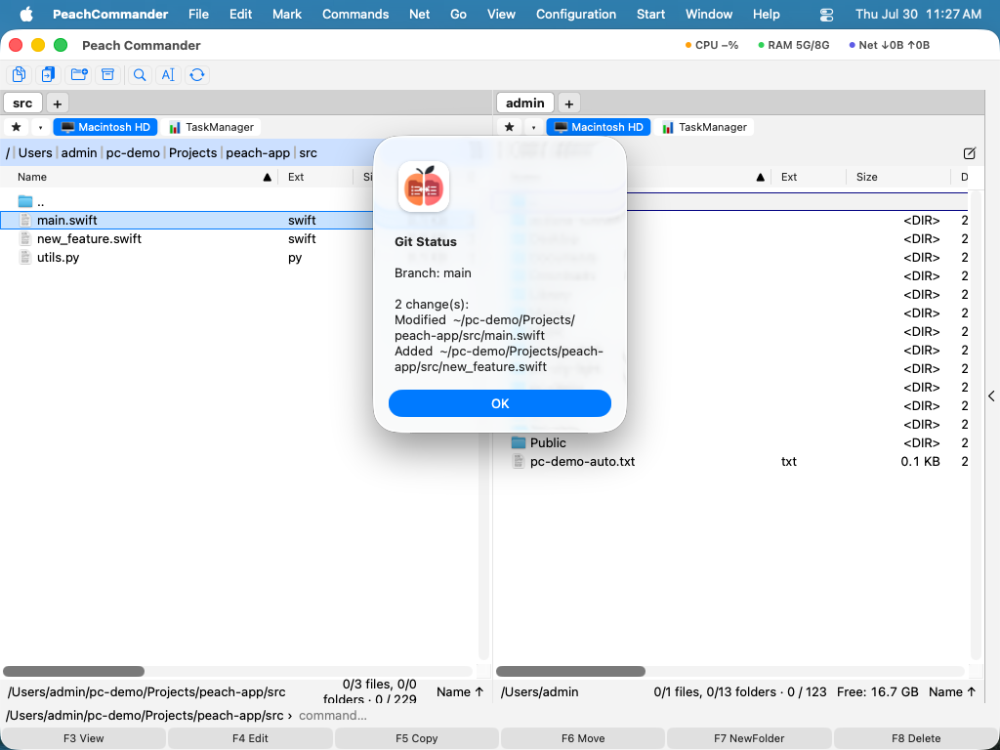

Git
Pluginul Git arată starea unui depozit Git direct în panoul de fișiere — fără o aplicație separată și fără
terminal. Adaugă două coloane, un submeniu Git, un panou andocat pentru pregătire și comitere și ferestre
pentru istoric, blame, ramuri, conflicte și rebazare. Folosește git-ul deja instalat pe Mac-ul
dumneavoastră. Este un plugin, deci îl puteți dezactiva sau elimina din Configurație ▸ Pluginuri….
Ce adaugă
- Două coloane în lista de fișiere — Stare Git și Ramură. Fiecare fișier arată o pictogramă și un cuvânt scurt de stare (Modificat, Adăugat, Șters, Neurmărit, Redenumit, Copiat, Conflict, Ignorat, Tip schimbat), cu (pregătit) când modificarea este deja în index; coloana Ramură arată ramura pe care se află depozitul acelui fișier. Activați coloanele din Configurație ▸ Coloane… (vedeți Moduri de vizualizare și sortare).
- Un meniu Git — sub Comenzi ▸ Git și în meniul contextual al unui fișier.

(Figură: Starea Git indică ramura și fiecare modificare din arborele de lucru.)Panoul: pregătire, comitere, sincronizare
Comenzi ▸ Git ▸ Panou andochează o vedere care grupează arborele de lucru în pregătit, modificat și neurmărit. Selectați fișiere și folosiți Pregătește, Retrage din pregătire sau Renunță…, scrieți un mesaj și apăsați Comite — cu Amendează, modificarea este pliată în comiterea precedentă. Fetch, Trage și Împinge sunt alături, acolo unde comiterea are loc oricum; toate trei arată progresul și pot fi anulate.
Se comite indexul, nu git commit -a: ce ați pregătit este ce se comite.
Istoricul în panou
Sub butoane, panoul arată istoricul tuturor ramurilor, ramurilor la distanță și etichetelor ca graf desenat, cu copia de lucru pe primul rând. Zona de dedesubt urmează selecția:

- Modificări locale arată fișierele pregătite, modificate și neurmărite și caseta de commit descrisă mai sus.
- Un commit arată fie Commit — autor, committer, dată, hash, părinți, ref-uri, semnătură și mesajul complet — fie Modificări.
- Modificări listează fișierele atinse ca arbore și diff-ul fișierului ales cu numere de linie; un dublu clic deschide fereastra de comparare.
- Meniul contextual copiază hash-ul sau subiectul, anulează, face cherry-pick, deschide commit-ul pe web și limitează lista la Doar ramura curentă.
- Din același meniu, un commit poate fi comutat, poate primi o ramură sau o etichetă nouă, poate fi îmbinat în ramura curentă, ramura curentă poate fi rebazată sau resetată pe el ori poate porni un rebase interactiv.
- Câmpul de căutare de deasupra listei caută în tot istoricul — mesaj, numele și e-mailul autorului sau un hash și primele lui caractere — și listează rezultatele fără graf.
Mai mult în panou și în meniul Git
Copia de lucru, istoricul și meniul Comenzi ▸ Git oferă mai mult decât comiterea:
- Un fișier pregătit sau modificat selectat își arată diff-ul sub listă; liniile selectate sau un bloc întreg pot fi pregătite, retrase din pregătire sau abandonate din meniul contextual.
- Câmpul de commit primește mai multe rânduri — un subiect, un rând gol, un text —, comite cu Cmd+Return și numără caracterele subiectului; butonul de meniu de alături păstrează ultimele tale mesaje de commit.
- Arată în panoul din stânga și Arată în panoul din dreapta duc un panou de fișiere la un fișier din listă sau din modificările unui commit, în timp ce panoul Git rămâne cum este; fișierele stocate de Git LFS sunt marcate LFS.
- Stash-urile apar în istoric ca pătrățele deasupra commit-ului pe care au fost făcute, cu Aplică stash, Aplică și elimină stash și Șterge stash… în meniul contextual.
- Reflog… listează fiecare mutare a HEAD; un commit pierdut printr-o resetare sau o ramură ștearsă revine cu Ramură nouă aici….
- Setările depozitului… adaugă, redenumește, redirecționează și elimină depozite la distanță, adaugă, actualizează și elimină submodule, gestionează worktree-uri și dă doar acestui depozit un nume și un e-mail pentru commit-uri.
- Creează depozit aici… și Clonează depozitul… lucrează în dosarul panoului activ, iar ceasul de lângă titlul panoului duce înapoi la un depozit recent.
Când git se oprește, și setările
- Push setează ramura upstream la prima împingere a unei ramuri. Dacă depozitul la distanță are commit-uri care lipsesc acestei ramuri, oferă Preia, apoi împinge sau Împingere forțată, mereu cu un lease care refuză dacă cineva a împins de la ultima ta preluare; Împingere forțată (cu lease)… este și în meniul contextual al lui Push.
- Dacă Pull constată că ramura și upstream-ul ei s-au despărțit, întreabă dacă să îmbine sau să facă rebase, în loc să se oprească la mesajul lui git.
- O îmbinare, un cherry-pick, un revert, un rebase sau o serie de patch-uri oprite într-un conflict arată deasupra istoricului un banner cu Continuă și Anulează…; un commit de îmbinare este anulat sau preluat față de primul său părinte.
- Selectează două commit-uri pentru a le compara, sau mai multe pentru a le prelua dintr-odată cu cherry-pick. Compară cu copia de lucru și Salvează ca patch… sunt în meniul istoricului, Aplică patch-uri… în meniul Git.
- Câmpul de căutare primește și filtre —
author:name,path:folder/,since:"2 weeks ago",until:2026-10-01— singure sau împreună cu cuvinte. - Bisect: marchează ca rău și Bisect: marchează ca bun din meniul istoricului pornesc un bisect; bannerul oferă apoi Bun, Rău, Sari și Încheie bisect până când git numește primul commit rău.
- Punerea în stash a fișierelor selectate sau a tuturor modificărilor cere un mesaj și întreabă dacă să includă fișierele neurmărite sau să păstreze indexul. Fișierele din Git LFS pot fi blocate și deblocate, iar tipul lor de fișier urmărit.
- În lista de ramuri, o ramură poate fi redenumită (Redenumește…), legată de un upstream (Setează ramura upstream…) sau ștearsă pe serverul ei (Șterge pe depozitul la distanță…).
- Configurări ▸ Git stabilește programul git, numele și e-mailul tău global, cum lucrează Pull, preluarea în fundal, ce arată istoricul și cum arată datele lui, semnarea, sign-off-ul și hook-urile pentru commit-uri, precum și spațiile și rândurile de context pentru diferențe. Autorii poartă inițiale colorate în istoric.
Fișiere, îmbinare, Git flow și pull request-uri
- Fișiere, lângă Commit și Modificări, arată întregul arbore la commit-ul selectat; un fișier se deschide cu numere de rând, iar meniul lui îl compară cu copia de lucru, îl salvează în altă parte sau îl pune înapoi în copia de lucru (Restaurează această versiune…).
- Editor de îmbinare… — la un fișier cu conflict în panou, în banner, în Rezolvă conflictul… și în meniul Git — arată conflictul curent ca a noastră, bază și a lor, una lângă alta, și dedesubt întregul fișier, editabil. Ia ale noastre, Ia ale lor, ambele în orice ordine sau Ia baza decid un conflict, iar Salvează și pregătește marchează fișierul ca rezolvat când nu mai rămân marcaje.
- Simbolul de ramură din antetul panoului este meniul Git flow: Începe funcționalitate…, Începe versiune… și Începe remediere… creează ramura din develop sau main, iar Încheie … o îmbină înapoi — o versiune sau o remediere în main cu o etichetă, apoi în develop. Încheierea din nou după un conflict continuă de unde s-a oprit.
- Pull request-uri… din meniul Git listează pull request-urile deschise (merge request-uri la GitLab) și problemele proiectului spre care indică depozitele la distanță, cu verificările fiecăruia; preia un pull request într-o ramură proprie și deschide unul nou pentru ramura curentă.
- E nevoie de un token de acces personal, introdus în acea fereastră și păstrat în portchei; tokenul este trimis doar la API-ul serviciului. Cu un token, un simbol lângă ramură în antetul panoului arată dacă CI a trecut pentru commit-ul curent.
- Configurări ▸ Git numește ramurile și prefixele Git flow și, la Găzduire, serverele GitLab sau GitHub Enterprise proprii.
Istoric, blame și web
- Istoric… listează comiterile cu un grafic pe benzi, referințele care indică spre fiecare (
● main,↗ origin/main,⚑ v1.0) și fișierele atinse de fiecare comitere. Return sau un dublu clic deschide versiunea acelui fișier față de predecesoarea ei în fereastra de comparare. Anulează comiterea și Cherry-pick sunt acolo, și ambele refuză din start dacă arborele de lucru nu este curat. - Istoricul fișierului… este aceeași fereastră pentru un singur fișier.
- Blame (listă)… arată fiecare linie cu comiterea, autorul și data ei. Blame în editor scrie aceeași informație pe marginea editorului, lângă numerele de linie: treceți peste o linie pentru mesajul comiterii, faceți clic pentru a o deschide față de predecesoarea ei.
- Deschide pe web deschide fișierul, comiterea sau ramura pe GitHub, GitLab, Bitbucket sau Azure DevOps, construit din URL-ul depozitului la distanță — fără cont, fără jeton. Pentru o gazdă a cărei formă a legăturilor nu o cunoaște, oferă pagina depozitului în loc să ghicească.
Ramuri, stive și etichete
Ramuri, stive și etichete… le listează pe toate trei. Comutarea, crearea, îmbinarea sau ștergerea unei ramuri; împingerea, scoaterea sau aruncarea unei stive; crearea, ștergerea sau împingerea unei etichete ori comutarea pe ea — o etichetă nu este o ramură, așa că se spune din start că HEAD va rămâne detașat. Aducerea, Trage și Împinge sunt în aceeași fereastră și pot fi anulate în timpul rulării.
Împingerea unei etichete este intenționat o acțiune separată: git push nu duce etichetele cu el.
Conflicte
Rezolvă conflictul… listează regiunile în conflict ale fișierului de sub cursor și ia o decizie pentru
fiecare: ale noastre, ale lor, ambele — sau lasă deschis. Apoi Scrie fișierul sau Scrie și
pregătește. Refuză pregătirea cât timp o regiune rămâne deschisă — Git ar comite fără ezitare marcajele
<<<<<<< — și refuză să atingă un fișier ale cărui marcaje nu le poate citi, în loc să le ghicească. Pentru o
regiune care cere împletirea manuală a ambelor părți, Deschide în editor este la un buton distanță.
Rebazare
Rebazează… listează comiterile aflate înaintea ramurii din amonte — cele pe care nimeni altcineva nu le are încă — și vă lasă să le comprimați, să le atașați ca reparație, să le aruncați, să le reordonați sau să le reformulați înainte ca ramura să fie rescrisă. Dacă o rebazare se oprește într-un conflict, aceeași fereastră devine Continuă / Sari peste comitere / Abandonează, astfel încât o rebazare pe jumătate făcută nu trebuie încheiată într-un terminal.
Schimbarea ulterioară a mesajelor de commit
- Editează mesajul… din meniul istoricului deschide mesajul unui commit pentru editare; cu mai multe commit-uri selectate se numește Editează mesajele…, iar Caută și înlocuiește în mesaje… — și Editează mesajele de commit… din meniul Git — caută în mesajele ramurii curente, ale commit-urilor neîmpinse încă sau ale tuturor ramurilor și etichetelor.
- Lista arată commit-urile al căror mesaj se schimbă. Mesajul celui selectat apare așa cum este, cu potrivirile marcate, și așa cum va fi, unde se poate și scrie; Lasă așa scoate din nou un commit.
- Caută secrete… caută tokenuri, chei și parole în mesajele listate și le completează în căutare; Maschează pune
***REDACTED***ca înlocuire. - Aplică… întreabă mai întâi: listează fiecare modificare, câte commit-uri primesc hash-uri noi și ce ramuri și etichete se mută, și avertizează despre commit-urile deja împinse. Commit-urile sunt scrise direct, deci nimic nu este extras (checkout) și nimic nu poate intra în conflict; fișierele, autorii și datele rămân cum erau. O semnătură este eliminată sau refăcută când Semnează commit-urile este activat în Configurări ▸ Git.
- Commit-urile vechi sunt păstrate: Desfă readuce ramurile atâta timp cât niciuna nu s-a mutat între timp. O ramură deja împinsă este înlocuită pe remote-ul ei cu Împinge forțat…, cu lease.
- Pentru un secret, Elimină commit-urile vechi… șterge copia de rezervă și intrările din reflog la care nu mai ajunge nimic, face curățenie (prune) și spune apoi dacă mai există un commit vechi. Commit-urile împinse pot fi încă accesibile pe server și în alte clone, așa că un secret împins trebuie și revocat.
Ignorarea fișierelor și datele de autentificare
- Ignoră acest fișier…, Ignoră acest tip de fișier… și Ignoră acest dosar… adaugă tiparul potrivit
în
.gitignore— ancorat unde trebuie, astfel încât ignorarea acestui dosarbuildsă nu ignore orice dosar numitbuild. - Date de autentificare… raportează cum se autentifică acest depozit: SSH sau HTTPS, dacă este configurat un asistent de acreditări, dacă rulează un agent SSH care ține o cheie. Unde ajută, oferă exact o acțiune — să lase Git să păstreze datele în brelocul macOS. Pluginul nu cere niciodată o frază de acces, nu o afișează și nu o păstrează.
Observații
- Pluginul folosește Git-ul sistemului, de la
/usr/bin/git, sau programul ales în Configurări ▸ Git. Dacă Git lipsește, comenzile raportează că Git nu este disponibil. (Instrumentele Xcode Command Line Tools îl includ.) - Starea depozitului este citită o dată per dosar și păstrată în cache, astfel încât derularea într-un depozit mare rămâne rapidă; cache-ul se reîmprospătează după orice comandă care schimbă arborele și urmărește și o comitere făcută în afara aplicației.
- Arborii de lucru legați și submodulele sunt acceptate: un fișier dintr-un submodul arată starea și ramura submodulului, nu pe cele ale depozitului părinte.
- Fiecare listă are meniu contextual, Return rulează acțiunea principală și Cmd+R reîncarcă fereastra.
- Git LFS,
gpgpentru commit-uri semnate și asistenții de autentificare sunt găsiți în dosarele Homebrew și MacPorts, chiar dacă aplicația a fost deschisă din Finder.